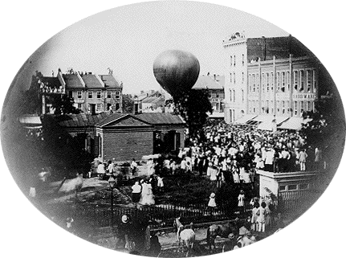

A Washington, plusieurs témoins observent un
phénomène céleste au-dessus de la ville "Celestial
Phenomenon", New York Times, 27 juillet 1859.
Depuis Lafayette (Indiana), 1ʳᵉ livraison officielle de courrier
U.S. par air par le ballon Jupiter de John Wise (ci-contre).

1ʳᵉ livraison officielle de courrier U.S. par air par le ballon Jupiter de John Wise, depuis Lafayette (Indiana), le 17 août Tippecanoe County Historical
Association < "History of the Purdue
School of Aeronautics and Astronautics", School of Aeronautics & Astronautics, Université de
Purdue
ou A Tarrarossa (Italie), le professeur Cocchi marche avec ses 2 frères lorsque soudain leur
attention est attirée par une boule de feu volant rapidement vers le sud-ouest pendant quelques secondes, avant
de disparaître derrière l'horizon. Ils n'entend aucune détonation, contrairement à ses frères Cocchi (professeur): Lettre à R. P. Greg < Annexe n°
6 de Glaisher-Gladstone-Greg-Lowe: "A catalog of observations of Luminous meteors" in Report of the 31st
meeting of the British Association for the Advancement of Science. London, 1862, p. 37 < Deliyannis, Y.: "Re: [PreUfo] 1845: Disc over Florence? Anyone have an English edition of FS Have landed?", Magonia
Exchange, 23 juillet 2008.
Au Royaume-Uni, début de plusieurs semaines de terribles orages de
grêles, de grésil et de pluie.
Dans le nord-ouest du comté de
Nays (Irlande?), M. Carter voit 2 globes de feu sortir d'un des nuages de neige et tomber à terre
Flammarion, Camille: Etudes et Lecture sur
L'Astronomie, Tome 5, 1874, pp. 157
Par un ciel est très noir et menaçant, un ingénieur civil attaché aux travaux de Holyhead, se rend en
ville quand il est effrayé par une apparition soudaine, directement au-dessus de sa tête : un globe de feu
dont la clarté intense, perçant la masse de vapeur qui couvre le ciel, illumine comme en plein jour la baie
et la pays environnant. Ce météore ne dure que 2 ou 3 s. Bientôt après cette apparition, le vent souffle en
ouragan et la pluie tombe par torrents Lettre de Sir William Snow Harris de Plymouth, décrivant l'expérience de son fils < Flammarion,
C.: Etudes et Lecture sur L'Astronomie, Tome 5, 1874, pp. 155-156.
Par un ciel sans nuages, M. Carter vois un brillant météore apparaître tout à coup dans la direction des
Pléïades. À sa 1ʳᵉ apparition, ce météore avait la dimension d'une étoile de 1er ordre. Pendant l'espace de
, il s'avance avec une grande vitesse vers le point où le témoin se trouve,
augmentant rapidement en grosseur, et venant dans une ligne si directe qu'on en éprouve une certaine alarme.
Sa couleur, d'un blanc étincelant, a tout l'éclat de l'électricité. Au bout de 4 ou 5 s, de blanc le météore
devient rouge vif et semble également changer de direction et perdre de sa vitesse. Il ne conserve cette
couleur rouge que pendant l'espace de 1,5 s à 2 s ; puis il se sépare en une quinzaine de globules d'un beau
vert d'émeraude, lesquels disparaissent au bout de 2 autres s. Le témoin indique qu'il lui serait difficile
de donner une esquisse exacte de ce météore, par suite de son approche en ligne directe. Après avoir changé
de couleur, il sembla également diminuer de diamètre et prendre plutôt la forme d'un courant électrique
que celle d'une substance solide. La durée entière de l'apparition n'a pas pu être plus de 10 s, ni
moins de 7 s. Sa direction est entre le nord-ouest et le nord-nord-ouest. Le témoin ne put s'empêcher de
penser que la chute de ce météore a quelque rapport avec l'ouragan L'amiral Fitz-Roy, Le Livre du Temps, chapitre 21 < Flammarion,
C.: Etudes et Lecture sur L'Astronomie, Tome 5, 1874, pp. 157